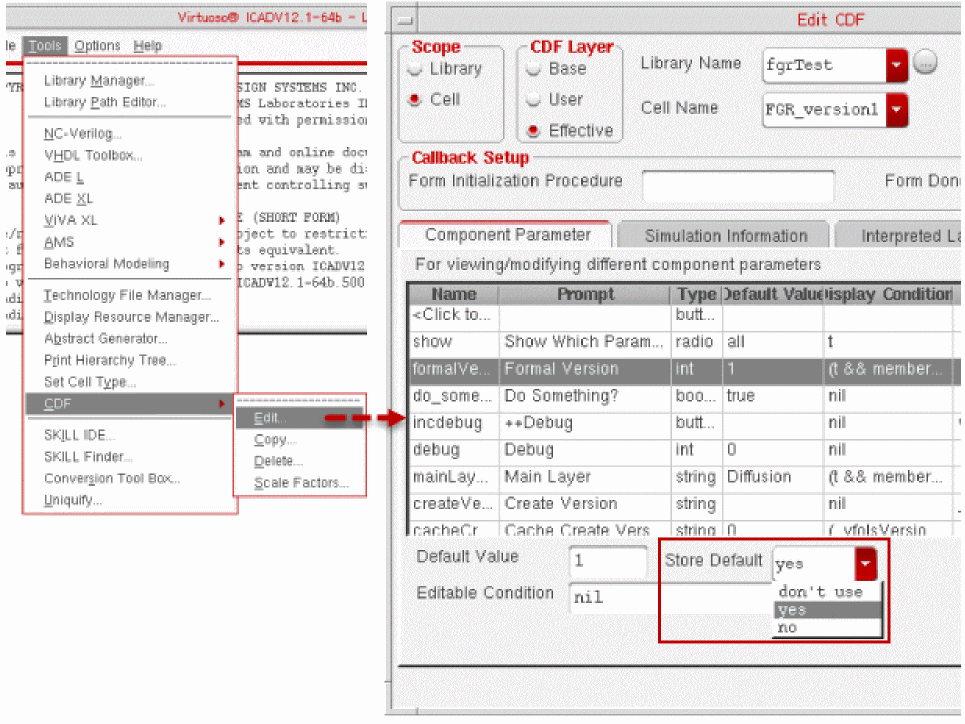

A
Best Practices for Developing a Fluid Guard Ring
While developing a fluid guard ring (FGR) device, Cadence recommends use of the following best practices to achieve reliable results:
-
Enable
store defaults, for example, by using the Edit CDF form. To access this form, in the CIW, choose Tools – CDF – Edit.
This concept is for all FGR parameters. If you want to retain the value on the instance even after the device definition or supermaster has been updated, the store defaults is used. -
Run Cadence® SKILL Lint and Profiler assistant
SKILL Lint is useful in examining SKILL code for potential errors that went undetected during normal testing and ways to clean up your code. In particular, it helps programmers find unused local variables, global variables that should be locals, functions that have been passed the wrong number of arguments, and hints about how to improve the efficiency of their SKILL code. For detailed information, refer to the SKILL Lint appendix in Cadence SKILL IDE User Guide.
The Profiler assistant can be used to check the time and memory consumption of your SKILL programs. For detailed information, refer to the Working with the Profiler Assistant section of the Examining Program Data chapter in Cadence SKILL IDE User Guide. -
Do not use any three-letter lower case prefixes, such as
cdn, for your function or procedure names. For detailed information, refer to the Naming Conventions section of the Language Characteristics chapter in Cadence SKILL Language User Guide. - Avoid using private functions. Contact your Cadence representative when a public function is needed.
-
To use extensibility of VFO infrastructure effectively:
-
Avoid using
callNextMethod()because if the base class method implementation is changed, it can impact the sub-class functionality. -
Always override the methods related to drawing or evaluation of FGR Pcell in the sub-class. For example:
vfoGRGeometry()andvfoSfDraw(). -
Ensure
vfoSfEnclosureClassandvfoSfFillSafeclasses are used only for drawing an instance of FGR device. Also, ensure that the methods of these classes are called only in thevfoSfDrawmethod. - Make all the new files created by PDK developer for extensibility a part of the customer PDK.
-
Avoid using
- Load the VFO infrastructure manually if a third-party tool is not able to evaluate your customized FGR. This is needed because third-party tools do not have access to the SKILL and SKILL++ code written by a PDK developer. For detailed information, refer to Chapter 8, “Fluid Guard Ring Packaging in PDK.”
- Avoid redefining the trigger available for updating the Create Guard Ring form fields. If the trigger is redefined, it overwrites its previous setting.
Return to top